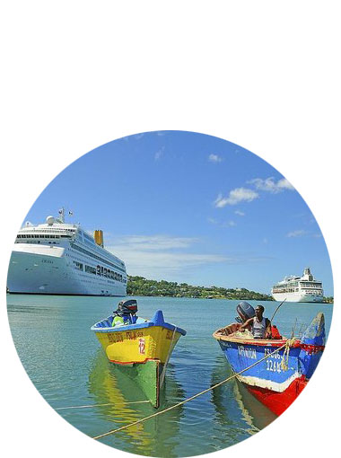

welcome to castries wifi zone

Cooperation Project between the Governments of
Saint Lucia and the Republic of China (Taiwan)

Saint Lucia and the Republic of China (Taiwan)

GINET
The Government of Saint Lucia by way of responding to both problems of urban-rural digital divide and low home Internet penetration rate has requested the Government of the Republic of China (Taiwan) to assist in the development and implementation of the Government Island-wide Network (GiNet) Project.
The five (5) target areas of establishing WLAN in St. Lucia are: Castries, Micoud, Vieux-Fort, Canaries and Dennery. Seventy (70) wireless access points will be established in these areas.
Cooperation Project between the Governments of Saint Lucia and the Republic of China (Taiwan)